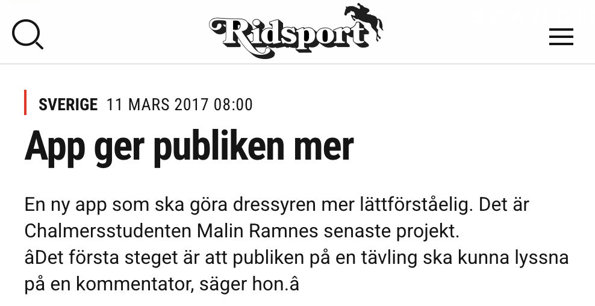

Dressyrappen på Facebook
Dressyrappen uppmärksammas i Tidningen Ridsport

Dressyrappen startade som ett projekt på Chalmers med syfte att möjliggöra realtidskommentering av dressyrtävlingar via en mobilapp. Jag tog sedan vidare projektet i min enskilda firma. Appen har använts vid evenemang som Gothenburg Horse Show, Stockholm International Horse Show, Falsterbo Horse Show och SWB Equestrian Weeks.